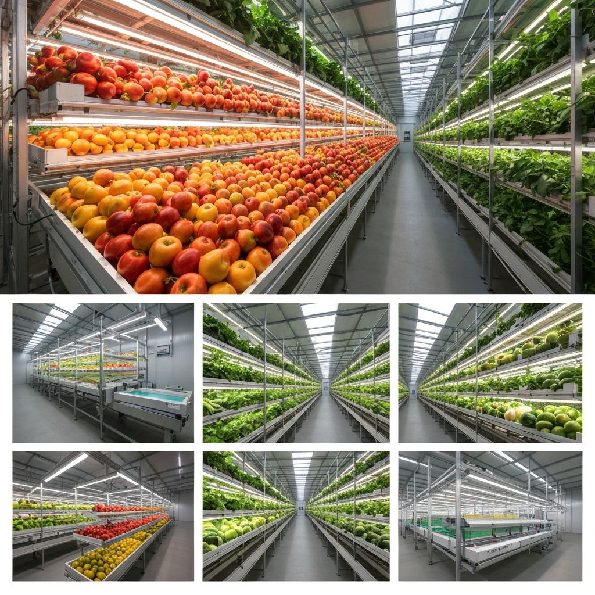

Meyve üreticileri için geliştirilen akıllı sistemimiz, çürük ve bozuk meyveleri anında tespit edip ayırır. İsrafı azaltın, kalitenizi artırın, müşterilerinize her zaman en taze meyveleri sunun.

Bant üzerinden geçen her meyve, kameralar tarafından taranır. Yapay zeka çürük meyveleri anında tespit eder ve otomatik olarak ayrı sepete yönlendirir. Siz sadece izleyin, sistem gerisini halleder.
Meyve banda girdiğinde sensörler otomatik olarak sistemi harekete geçirir.
Kameralar meyvenin her açısını görüntüler, hiçbir çürük nokta gözden kaçmaz.
Akıllı sistem meyvenin sağlıklı mı yoksa çürük mü olduğunu anında belirler.
Sağlam meyveler bir tarafa, çürükler diğer tarafa otomatik olarak ayrılır.
Her meyve saniyenin onda biri kadar kısa sürede taranır ve analiz edilir.
İki kamera aynı anda çalışır, bant hiç durmaz. Üretim hattınız aksamaz.
Bir sorun olursa sistem kendini otomatik olarak yeniden başlatır. Müdahale gerekmez.
Kaç meyve sağlam, kaç meyve çürük? Ekrandan anlık olarak takip edin.
Sistemimizi güçlü ve güvenilir kılan teknolojiler.
En güncel nesne tanıma teknolojisi. Çürük meyveleri göz açıp kapayıncaya kadar tespit eder.
Meyvelerin her açısını görüntüler ve yapay zekaya analiz için iletir.
Tüm sistemi yöneten, hızlı ve güvenilir yazılım altyapısı.
Avuç içi büyüklüğünde güçlü bir bilgisayar. Tüm işlemleri tek başına yönetir.
Her ayrıştırma kaydedilir. Günlük, haftalık raporlarınıza kolayca ulaşın.
Kolay kullanımlı dokunmatik ekran ile sistemi parmak ucunuzdan kontrol edin.
Konveyör bant mekanik mimarisini tasarladı, tüm donanım bileşenlerini sisteme entegre etti ve 3D model üretimini gerçekleştirdi.
Ana kontrol yazılımını, YOLOv11 yapay zeka entegrasyonunu, TFT arayüzünü ve tüm gömülü sistem kodunu geliştirdi.
Proje hakkında detaylı bilgi almak veya iş birliği teklifinizi iletmek için aşağıdaki formu doldurun.